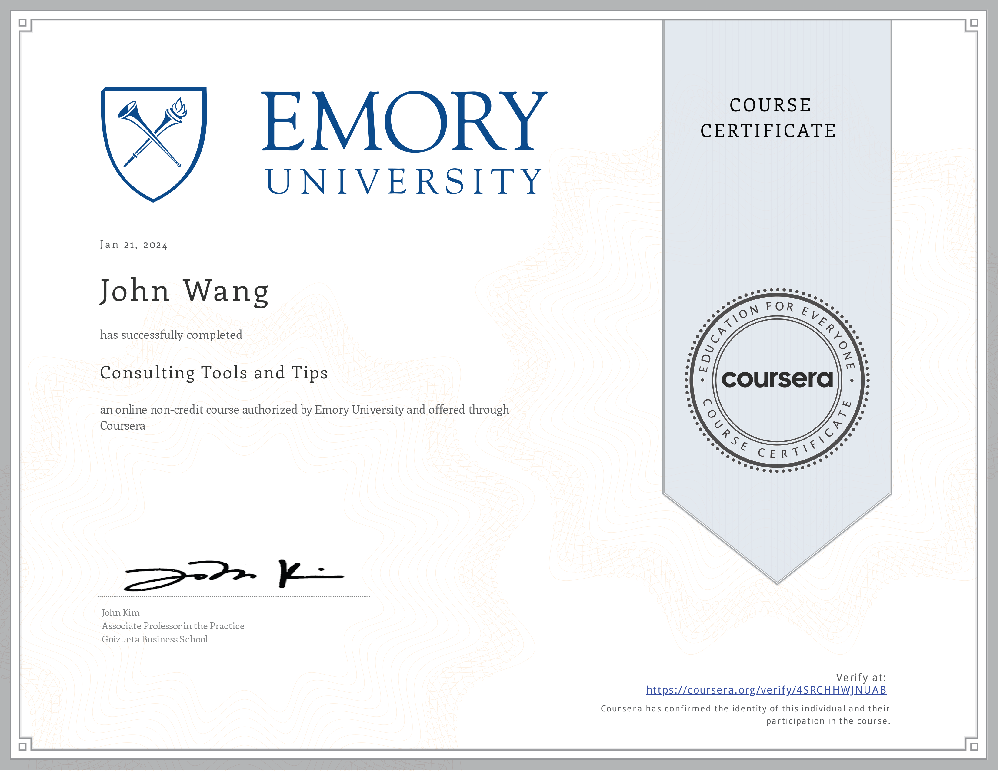

John's Strategy Certificates
- Management Consulting Specialization (5 Classes) - Emory University - John Kim
- Introduction to Management Consulting - Emory University - John Kim
- Getting a Consulting Job - Emory University - John Kim
- Consulting Approach to Problem Solving - Emory University - John Kim
- Consulting Tools and Tips - Emory University - John Kim
- Consulting Presentations and Storytelling - Emory University - John Kim
Management Consulting Specialization (5 Classes) - Emory University - John Kim

Introduction to Management Consulting - Emory University - John Kim
Getting a Consulting Job - Emory University - John Kim

Consulting Approach to Problem Solving - Emory University - John Kim

Consulting Tools and Tips - Emory University - John Kim

Consulting Presentations and Storytelling - Emory University - John Kim